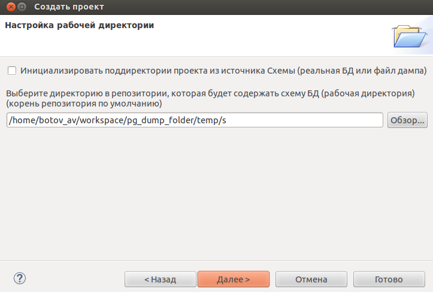

Настройка рабочей директории
На этой странице необходимо указать путь до директории, в которой будетут располагаться файлы проекта (Extension, Schema и др.).
Если указанная директория пуста, то нужно инициализировать её данными отметив чекбокс "Инициализировать поддиректории проекта из источника".
